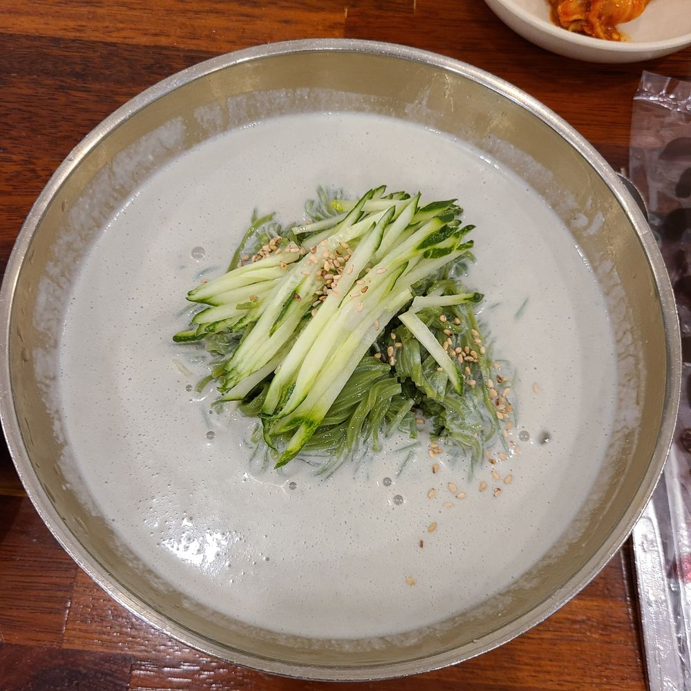

콩국수 벌써 올해만 네번째..!
ㅋㅋㅋㅋㅋㅋㅋ 아니 다섯번째인가..?
저번에도 은비언니가 ㅋㅋㅋㅋㅋㅋ
콩국수 시켜가지고 ㅋㅋㅋㅋ 그날도 먹고
오늘도 먹구 본집가서도 먹구
오늘 심지어 먹고나서 하나더 포장해왔어여
이렇게 하나에 빠지면.. 끝을.. 봐야지..!
질릴 때까지 먹어야지..!
콩국수 질리면 그 담엔 돈까스에 냉면이닷
이거 먹고 원영이한테 자랑했더니 뿌듯해한다
ㅋㅋㅋㅋㅋㅋㅋㅋㅋㅋㅋㅋㅋㅋㅋㅋ
여기가 원영이가 추천해준 곳이거든여
암튼 맛있었엉 ><
